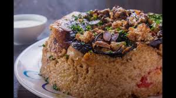
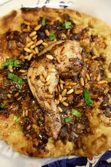
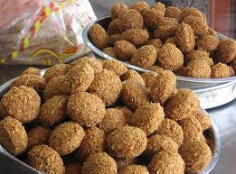

Maqluba
Maqluba or Maqlooba is a traditional Syrian, Iraqi, Palestinian, and Jordanian dish served throughout the Levant. It consists of meat, rice, and fried vegetables placed in a pot which is flipped upside down when served, hence the name maqluba, which translates literally as "upside-down.
|  |
| Maqluba |
Musakhan
Musakhan is a Palestinian Arab cuisine dish, composed of roasted chicken baked with onions, sumac, allspice, saffron, and fried pine nuts served over taboon bread. It is also known as muhammar.
|  |
| Musakhan |
Falafel
Falafel is made from fava beans or chickpeas. The use of chickpeas is predominant in most Middle Eastern countries, such as Israel, Jordan, Lebanon, Palestine and Syria. This can be done by hand or with a tool called an aleb falafel (falafel mould). The mixture is usually deep fried, or it can be oven baked.
|  |
| Falafel |